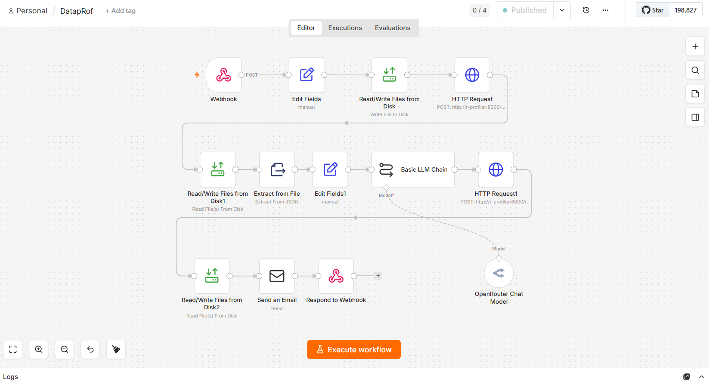
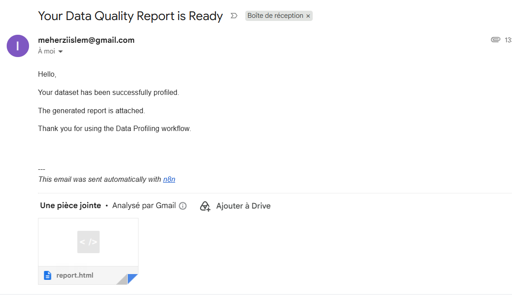
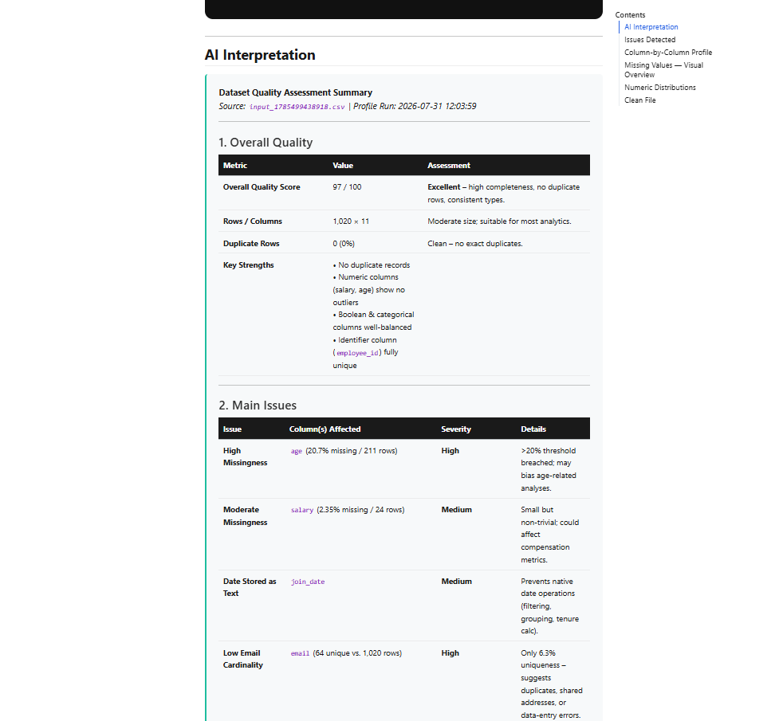

flowchart LR
A[Upload<br/>CSV + email] --> B[n8n<br/>webhook]
B --> C[R + Plumber<br/>profiling API]
C --> D[metrics.json<br/>+ clean data]
D --> E[AI layer<br/>OpenRouter]
D --> F[Quarto<br/>render]
E --> F
F --> G[Report<br/>HTML / PDF]
G --> H[Email<br/>sent]
classDef gray fill:#F1EFE8,stroke:#2C2C2A,stroke-width:1.5px,color:#2C2C2A
classDef teal fill:#9FE1CB,stroke:#0F6E56,stroke-width:1.5px,color:#04342C
classDef orange fill:#FAC775,stroke:#B36A0C,stroke-width:1.5px,color:#4A2C05
class A,B,H gray
class C,D,F teal
class E orange
linkStyle default stroke:#2C2C2A,stroke-width:2px
Orchestrating R With n8n, Then Adding an AI Layer on Top
R
AI
data-engineering
n8n
automation
Exploring how n8n can orchestrate R, Plumber, and Quarto into a single automated workflow, with a thin AI layer added on top to turn structured output into plain-language explanations: free to run, demonstrated here through a data profiling pipeline.
Why I started exploring n8n with R
The question I set out to answer was simple: can n8n actually orchestrate an R workflow end to end — not just trigger a script, but coordinate R, an API layer, a reporting tool, and an AI step into one pipeline that runs on its own?
Data profiling became the test case, because it’s a workflow I run often, and one where the raw output is genuinely hard for a non-technical person to use as-is. The point of this post is what happens when you let a handful of tools, each good at one job, get orchestrated together instead of stitching everything together manually.
R already does the hard part well. Packages like skimr and DataExplorer, or a simple Plumber API, can generate detailed quality metrics in seconds. That was never the problem.
The real challenge comes afterward. A JSON file filled with hundreds of metrics tells you what happened, but not what matters. So the shape I landed on was: let R handle the analysis, n8n orchestrate the workflow, Plumber expose the API, Quarto generate the report, and AI add the final layer by turning raw metrics into a concise narrative people can actually read.
That same architecture can power data validation, ETL monitoring, quality checks, or almost any R workflow that ends with “here are the numbers.” Data profiling just happened to be the first place I put it to the test.
Note
The AI never sees the raw data. It only ever sees a structured summary: aggregate stats, detected issues, metadata, quality scores.
Why that boundary matters
Keeping the LLM limited to the structured summary, never the raw rows, pays off in a few concrete ways:
- Faster. A small JSON file, not a dataset, so response time doesn’t depend on file size.
- Cheaper. Cost tracks the summary, not the row count: a 2-million-row file costs about the same to interpret as a 2,000-row one.
- Privacy-friendly. No data leaves the R/Docker boundary: useful anywhere data protection rules apply (in Tunisia, the INPDP reform makes this less optional than it used to be).
- Deterministic where it counts. Every number in the report came from R. The AI can explain a number, never invent one.
- Less room for hallucination. Summarizing a dozen known facts is a narrow task; “analyze this dataset” is not.
The stack, and what n8n does with it
Each piece here does one job. n8n is what turns them into a single pipeline instead of five disconnected tools.
R does the actual work: profiling, validation, duplicate detection, type inference, cleaning. Every number in the final report comes from here, and nothing downstream is allowed to override that.
Plumber turns the R script into an HTTP API, so n8n can call it directly instead of shelling out to Rscript (which breaks easily on path and environment issues):
#* Profile an uploaded dataset
#* @param file:file Uploaded CSV
#* @post /profile
function(file) {
df <- readr::read_csv(file$datapath)
metrics <- run_profiling(df) # your existing profiling logic
jsonlite::write_json(metrics, "metrics.json", auto_unbox = TRUE)
metrics
}n8n calls /profile, gets JSON back, and never needs to know R is even involved. That decoupling is what let me swap profiling logic underneath it several times without touching the orchestration at all.
Docker runs the pipeline as two containers:n8n in one, and the R/Plumber/Quarto service in another that handles both profiling and report rendering. This isn’t a formality: it’s what stopped “works on my machine” scripts from breaking the moment I moved environments, and it’s what makes the whole thing portable to any VPS.
n8n is the orchestrator that actually ties the above together. It receives the upload and email through a webhook, calls the Plumber API, sends the resulting JSON to the LLM, triggers the Quarto render, and emails the finished report. None of these steps is clever on its own — what n8n buys you is not having to hand-write retry logic, error branches, and conditional flow for each one.
OpenRouter handles the AI call, routed through one API that can reach DeepSeek, Qwen, Llama, Mistral, Gemma, or GPT-compatible models. Switching models is a one-field change in one n8n node, no prompt rewrite required.
Tip
For full data privacy, swap OpenRouter for a local Ollama model. Same architecture — only the endpoint changes.
ngrok, optionally, exposes a local n8n webhook to the internet during testing: useful before you’ve deployed to a server.
Quarto renders the profiling metrics and the AI narrative into one HTML or PDF report, the same tool this blog runs on, for the same reason: reproducible documents without a separate templating layer.
The pipeline, end to end
Here’s what that looks like running for real in n8n:

Here’s what that graph actually does: the webhook writes the upload to disk, then calls the R container’s /profile endpoint. n8n reads metrics.json back off disk, reshapes it, and feeds it to a Basic LLM Chain node pointed at OpenRouter for the narrative. That narrative gets posted back to the same R container — this time hitting its /report endpoint. n8n reads the finished report off disk, emails it, and responds to the original webhook.
What the AI layer is actually allowed to do
The AI does: summarize results in plain language, prioritize which issues matter most, explain the practical risk behind a metric, produce next-action recommendations, flag anomalies worth a human look.
The AI does not: compute any statistic, decide what counts as a violation (that’s an R rule), see a single raw row, or override a business decision.
Every recommendation traces back to a number R already computed. It’s a communication layer, not a computation layer.
Why deterministic-plus-AI beats “just use AI for everything”
Feeding a raw dataset straight to an LLM and asking for a quality report is tempting, and I tried it early on. It falls apart for a few predictable reasons: validation stops being auditable, results stop being consistent run to run, and business rules end up buried in a prompt instead of visible in code.
Keeping R deterministic and the LLM strictly an explanation layer avoids all three, and it matters most in regulated environments, where “why did the system flag this?” needs an answer better than a fluent-sounding AI summary with no logic behind it.
What about agentic AI?
Agentic workflows: an LLM that plans its own steps, calls tools, and decides what to do next, are getting a lot of attention, and for genuinely open-ended tasks, that autonomy earns its keep.
For a pipeline like this one, it doesn’t, for three reasons:
- Speed. An agent chains several LLM calls per task. This pipeline makes one: read the summary, produce the interpretation.
- Hallucination compounds. Each extra autonomous step is another chance to misread something, and that error carries forward. One narrow call has far less room to go wrong than a multi-step agent deciding its own process.
- The task is already solved. R already knows exactly how to compute profiling, validation, and duplicate checks, the same way, every time. An agent rediscovering that from scratch adds cost without adding value.
Agentic approaches make sense on the other kind of problem: look at this new dataset and tell me what’s odd about it,” where no rule set exists yet. That’s not this. For known metrics and defined rules, a deterministic core with an AI layer for summarizing and flagging has been the better trade-off.
Triggers beyond a manual upload
Once the webhook exists, the trigger is arbitrary: a new file landing in a folder, a scheduled nightly run, a change in SharePoint, Google Drive, or OneDrive, an S3 event, a database update, a Git commit. Each one produces a fresh report with zero change to the profiling or interpretation logic.
What it actually costs to run
This was deliberate from the start, not an afterthought. R, Docker, Plumber, Quarto, and n8n (self-hosted) are all open source, no licensing cost anywhere. The LLM call runs entirely on free-tier OpenRouter models, in practice: metrics.json is a small, well-defined input, and free models handle that kind of structured reasoning well.
Paid APIs are an option if you want more polished phrasing at scale, but they’re not required to get useful output. Swap in local Ollama instead of OpenRouter and it’s still zero, at the cost of your own compute. What used to require statistical training to interpret now runs on its own, for free — and it scales just as well from a solo analyst to a nightly production job.
Here’s what actually lands: the email as received, and a snippet of the report itself. For this run, I used a public dataset — the Messy Employee Dataset on Kaggle — so the metrics and issues you’ll see below are reproducible if you want to try the pipeline yourself.


Where this leaves things
This covers the architecture at the level that matters for understanding why it works: n8n orchestrates R, Plumber, and Quarto into one pipeline; R stays deterministic; the AI layer only ever sees a structured summary; and every component is open source or free to run. It’s the shape of the system, not a step-by-step build guide.
There’s enough underneath this: self-hosting n8n with Docker, webhook and node setup, structuring the OpenRouter prompt around the metrics schema, triggering the Quarto render, wiring up email delivery, that each one probably deserves its own writeup. I’m planning to follow up with a more hands-on post covering the setup in more detail, likely starting with the parts that are trickiest to get right.
Thanks for reading this far. If this setup is close to something you need, or you want a similar automated workflow built for your own use case, I’m happy to talk it through. You can reach me here.